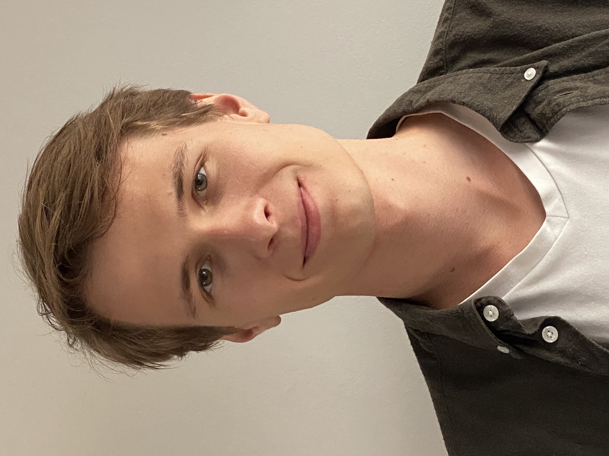

Edvard Aksnes
I am a software engineer with a PhD in mathematics, currently leading and architecting production generative AI systems at PwC. I focus on building mathematically grounded systems for complex, high-stakes problems, with responsibility for architecture, deployment, and long-term reliability in real-world environments. I am most effective in settings where problems are ill-specified, technically demanding, and require both rigorous reasoning and robust engineering.
CV
Work experience
-
Manager, National Generative AI team, PwC Norway, September 2023 – Present
- Tech lead and system architect for large-scale internal GenAI applications
- Designed and implemented production backends integrating machine-learning components, structured data, and internal APIs
- Responsible for cloud deployment, CI/CD, and operational reliability in Azure-based environments
-
Associate, AI/ML group, Risk Advisory Services, PwC Norway, August 2019 - August 2020
Education
- Doctoral Research Fellow in Mathematics, Tropical Geometry, University of Oslo, 2020-2024, supervised by Kris Shaw, Thesis, Disputation presentation, Trial Lecture presentation
- MSc. in Mathematics, Algebra and Geometry, University of Oslo, 2017-2019, archived thesis, alternative link
- BSc. in Mathematics, Informatics and Technology, University of Oslo, 2015-2017
Research
- Tropicalization of curve arrangement complements and arroids, MATHEMATICA SCANDINAVICA, 131(2)., 2025, ArXiv version.
- Cohomologically tropical varieties, Journal of the Institute of Mathematics of Jussieu , Volume 24 , Issue 6 , November 2025 , pp. 2543 - 2572, joint with Omid Amini, Matthieu Piquerez, Kris Shaw, 2023, ArXiv version
- Tropical Poincaré duality spaces, In: Advances in Geometry vol. 23, no. 3 (2023), pp. 345-370, ArXiv version, MathSciNet: MR4626316
Talks
- Exceptions aren't cool, Tech Toks, PwC Norway, 2025-10-15
- Tropical Poincaré duality spaces, The Fields Institute Matroid seminar, 2023-03-02
- "What is cohomology?", Young People Seminar UiO, 2022-06-07
- The Grothendieck and Leray spectral sequences, Student seminar, 2022-05-20
- The Hodge Decomposition, Student seminar, 2022-03-25
- Tropical Poincaré duality spaces, LAGARTOS, 2022-03-25
- Fundamental groups in real and complex algebraic geometry, Student seminar, University of Oslo, 2021-01-28
Events attended
- Pycon Sweden 2025
- Tropical Methods in Geometry, Mathematisches Forschungsinstitut, Oberwolfach, 14 May - 19 May 2023
- MaTroCom, Workshop on Matroids and Tropical Combinatorics, QMU , London, 9 January - 13 January 2023
- Real Aspects of Geometry, CIRM, 31 October - 4 November 2022
- Real Algebraic Geometry, CIRM, 24 - 28 October 2022
- Nasjonalt Matematikermøte, Tromsø, 1 - 2 September 2022
- Non-Archimedean and Tropical Geometry, Regensburg, 1 - 5 August 2022
- Topics in real and tropical algebraic geometry, Sophus Lie Conf. Center, Nordfjordeid, 20 - 24 June 2022
- Göran Gustafsson Symposium, Hodge theory and comb. of matroids, Mittag-Leffler, 30 May - 01 June 2022
- Tropical homology and Hodge theory, 23 - 27 August 2021
- CAS Oslo: Real Structures in Discrete, Algebraic, Symplectic and Tropical Geometries, Oslo, 2 - 5 August 2021
- Seminar series on basics of (Weil's) Riemann hypothesis, March - June 2021, University of Oslo
- ICERM: Combinatorial Algebraic Geometry, Feb 1 - May 7, 2021
- Regular attendance in the LAGARTOS seminar
- Regular attendance in the UiO Algebra Seminar
Posts
- Manifolds: Topological, Smooth, Complex, Kähler (Work in Progress),
- How do you test LLM output?, 2025-02-20
- Computing the boundary complex using Macaulay2, 2023-05-08
- What is the sheaf of meromorphic p-forms?, 2022-06-10
- Plotting complex functions with Julia, 2021-03-27
Links
Here are some links to useful pages / pages I like:
- Tropical seminar
- Student seminar
- PDE coffee table book
- An album of Fluid Motion
- Michael Nilsen's website
- Visualisation of the Enriques–Kodaira classification of compact complex surfaces
- Graded Ring Database
- Polymake Mini-Reference
- UiO computational resources overview
- Daniel Murfet's website
- Internal Combustion Engine
- Poisson's Equation
- A quick intro to Galois descent for schemes
- Brian Conrad's Expository papers
- Texromancers